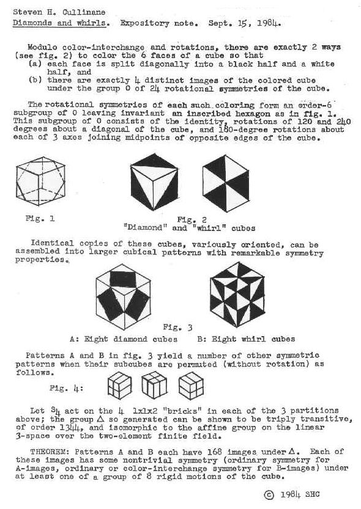

It shows that we can scramble parts of suitably defined symmetric patterns in a seemingly arbitrary way, and still get patterns that have some sort of symmetry.
To understand the theorem, you should first try The Diamond 16 Puzzle.
Then scroll down on this web page to see presentations of the 4x4, 2x2, 2x2x2, and 4x4x4 cases of the theorem. After these, scroll down further to view a diagram that summarizes the group actions in the above cases, and, finally, a statement of the theorem that includes all the cases previously discussed.
The 4x4 case:
 We
regard the four-diamond figure D at left as
a 4x4 array of two-color diagonally-divided square tiles. We
regard the four-diamond figure D at left as
a 4x4 array of two-color diagonally-divided square tiles.Let G be the group of 322,560 permutations of these 16 tiles generated by arbitrarily mixing random permutations of rows and of columns with random permutations of the four 2x2 quadrants. THEOREM: Every G-image
of D (as at right,
below) has some ordinary or color-interchange symmetry. Example:
 Remarks:
G is isomorphic to the
affine
group A on the linear 4-space over GF(2). The 35 structures of
the 840 = 35 x 24 G-images of D
are isomorphic to the 35 lines
in the 3-dimensional projective space over GF(2).
This can be seen by viewing the 35 structures as three-sets of line diagrams, based on the three partitions of the four-set of square two-color tiles into two two-sets, and indicating the locations of these two-sets of tiles within the 4x4 patterns. The lines of the line diagrams may be added in a binary fashion (i.e., 1+1=0). Each three-set of line diagrams sums to zero -- i.e., each diagram in a three-set is the binary sum of the other two diagrams in the set. Thus, the 35 three-sets of line diagrams correspond to the 35 three-point lines of the finite projective 3-space PG(3,2). For example, here are the line diagrams
for the figures above:  Shown below are the 15 possible line diagrams  The symmetry of the line diagrams accounts for
the symmetry of the two-color patterns. (A proof shows that a
2nx2n two-color triangular
half-squares pattern with such line diagrams must have a 2x2 center
with a symmetry, and that this symmetry must be shared by the entire
pattern.)
Among the 35 structures of the 840 4x4 arrays of tiles, orthogonality (in the sense of Latin-square orthogonality) corresponds to skewness of lines in the finite projective space PG(3,2). This was stated by the author in a 1978 note. (The note apparently had little effect. A quarter-century later, P. Govaerts, D. Jungnickel, L. Storme, and J. A. Thas wrote that skew (i.e., nonintersecting) lines in a projective space seem "at first sight not at all related" to orthogonal Latin squares.) We can define sums and products so that the G-images of D generate an ideal (1024 patterns characterized by all horizontal or vertical "cuts" being uninterrupted) of a ring of 4096 symmetric patterns. There is an infinite family of such "diamond" rings, isomorphic to rings of matrices over GF(4). The proof uses a decomposition technique for functions into a finite field that might be of more general use. The underlying geometry of the 4x4 patterns is closely related to the Miracle Octad Generat (pdf) of R. T. Curtis-- used in the construction of the Steiner system S(5,8,24)-- and hence is also related to the Leech lattice, which, as Walter Feit has remarked, "is a blown up version of S(5,8,24)." For a movable JavaScript version of these 4x4 patterns, see the Diamond 16 Puzzle.
|
|||
The 2x2 case:
| In the 2x2 case, D is a one-diamond figure (top left, below) and G is a group of 24 permutations generated by random permutations of the four 1x1 quadrants. Every G-image of D (as below) has some ordinary or color-interchange symmetry. | |||||
The 2x2x2 case:
The diamond theorem on a 2x2x2 cube --
For 3d views of the basic design elements, see diamond cube and whirl cube. For a movable JavaScript version of the 2x2x2 designs, see design cube 2x2x2.
The 4x4x4 case:
The diamond theorem on a 4x4x4 cube, and a sketch of the proof --
For a movable JavaScript version, see design cube 4x4x4.
Group actions:
Summary of group actions in various cases of the diamond theorem --Generalized statement of the diamond theorem:
|
|||||||||
| Related sites: The Diamond 16 Puzzle Diamond Theory Bibliography |
Page last updated Jan. 21, 2006; created May 22, 2002.